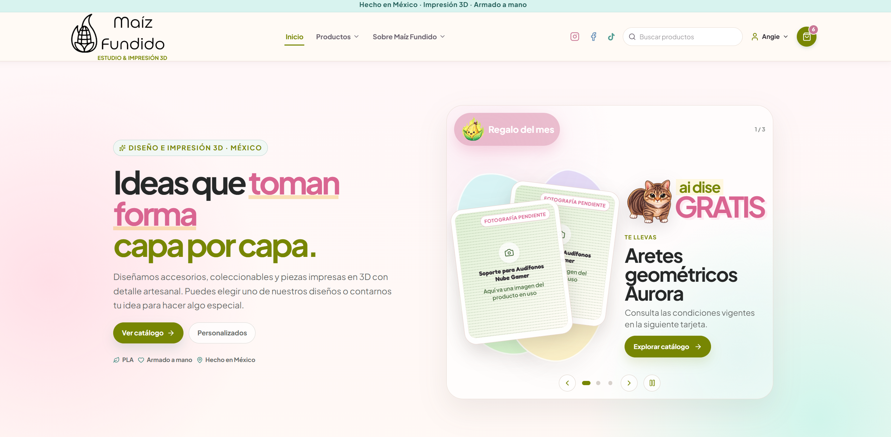

Maíz Fundido – eCommerce Full Stack
En desarrolloPlataforma eCommerce end-to-end con catálogo, variantes, inventario, autenticación, carrito, promociones y flujos administrativos.
Rol: Desarrollo Full Stack de frontend, backend, datos, autenticación, CI/CD e infraestructura.
Tecnologías: React, TypeScript, REST APIs, PostgreSQL, Firebase Auth, Docker, GitHub Actions, Cloudflare.
Desafíos: alinear contratos frontend/backend, mantener flujos de inventario y autenticación consistentes y desplegar cambios de forma incremental.
Enfoque actual: administración de catálogo, importación estructurada, seguridad y endurecimiento de UX.